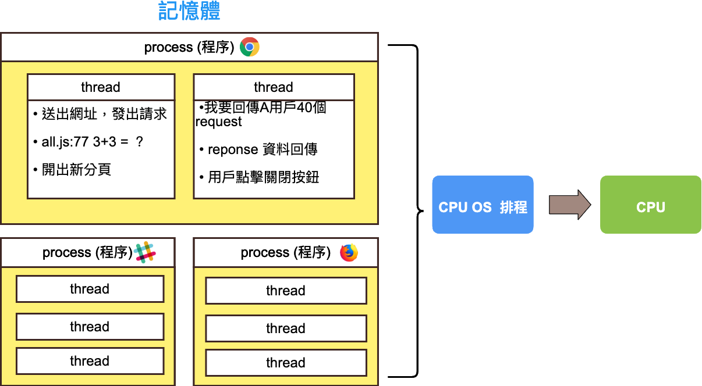

重新認識 JavaScript 之術
知識點
- 學習 JS 環境與除錯
- 變數：型別、命名規則、資料處理
- 變數：記憶體存放
學習 JS 環境與除錯
- 建立環境
- 新增 index.html、all.js
- 輸出語法 alert(“Hello world!!”) 觀看是否有成功
變數：型別、命名規則、資料處理
宣告變數流程
1
2
3
4
5
6let a = 1; // 宣告一個變數為 a，並賦予值為數字型別 1
let b = 0; // 宣告一個 b 變數，並賦予一個 0 的數字型別
a = 3; // 將 3 重新賦予值 至變數 a，一個數字3的型別
a = b + 2; // 將變數 b + 2 ，並重新賦予值至變數 a，一個數字 5 的型別
a - b; // 沒有做任何事，因為並未賦予值
b += 1; // 將變數 b + 1，並重新賦予值至變數 b，一個數字 1 的型別原始型別 (Primitive Type)
- number 數字
- string 字串
- boolean 布林true false
- undefined 未被賦予值
- null （與undefined差別為：有被賦予值）為空值
- symbol (不用理會這個)
學變數，讓電腦幫您記錄資訊，可用 let、const、var 來宣告變數，除了原始型別 (Primitive Type)外，還有物件型別
JS 變數命名觀念
- 使用駝峰式命名
- 初期練習請都用小駝峰命名，例如 isClose、fatherName
字串與數字型別講解
- 數字：計算機功能、支援格式、變數帶變數、NaN
- 字串：字串相加、數字與字串相加轉型、樣版字面值
- 賦值運算子：+=、-=、a++、a–
- 輔助語法：typeof、console.log
賦值運算子
有 +=
有 -=
有 ++
有 - -
有 自動轉型
數字 ＋ 字串 = 字串
1
2
3
4
5let a = 1;
let b = '1';
console.log(a+b);
// 11
// 若有任一運算元是字串，則以字串串接為優先數字 - 字串 ＝ 數字
1
2let e = 10 - "2";
// e = 8字串 - 字串 ＝ 數字
1
2let f = "10" - "2";
// f = 8+運算子可以讓單一值轉型成數值
1
2
3let b = '1';
console.log(typeof b); //string
console.log(typeof +b);// number若有任一運算元是NaN，運算結果會是NaN
1
2
3
4let a = 1;
let b = 'string';
console.log(a*b);
//NaN字串轉型成數字：可以使用 parsInt（字串）（從表單取出來的都是字串型別）
1
2
3
4let a = 1;
let b = parseInt('1');
console.log(a+b);
//2數字轉型成字串：可以使用 數字變數.toString()
1
2
3
4let b = 1;
b = b.toString();
console.log(b+1);
// 11
字串
字串處理方法：
length 計算字串長度
1
2let a = 'good';
console.log(a.length);trim 去掉空白元件
1
2
3let a = ' good ';
let b = a.trim();
console.log(b.length);
變數：記憶體存放
變數重要三劍客：記憶體位置、變數、型別
記憶體位置介紹：